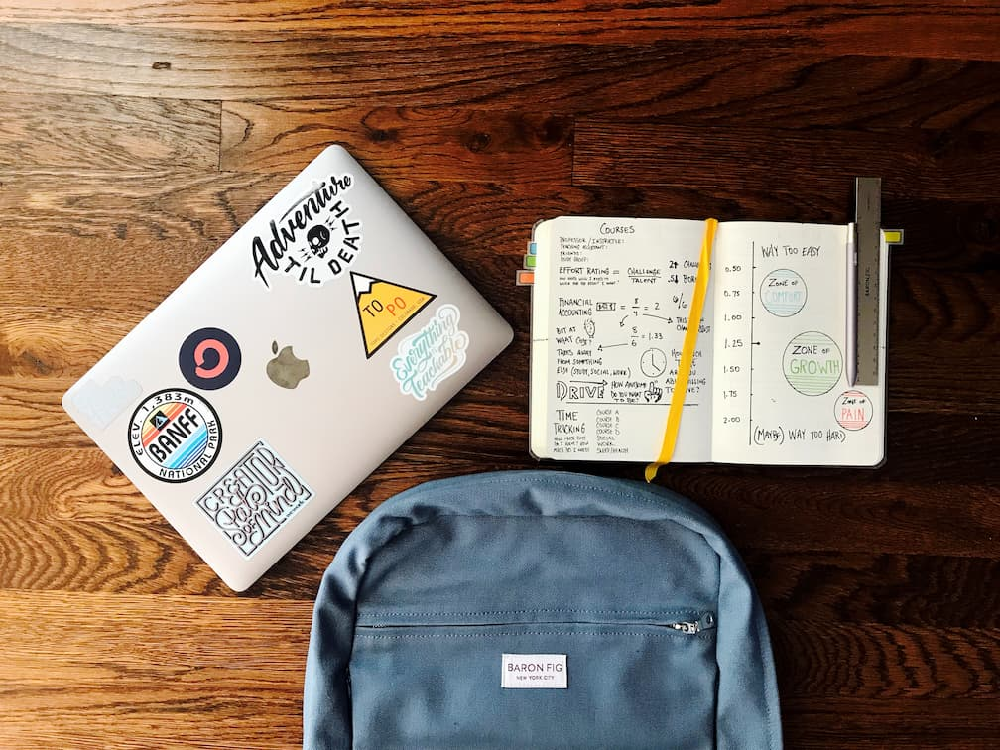

Фритрек и нулевой спринт: Подготовка к работе

В начале казалось, что нужно просто освежить базу и быстро войти в ритм. На деле пришлось заново собрать привычку читать задачу внимательно и не пропускать детали.
Этот этап помог настроиться: меньше спешки, больше проверок, больше уважения к мелочам.